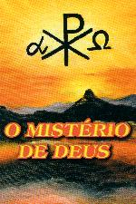
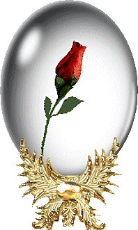

PRELÚDIO

Descortinando os ensinamentos cristãos, vamos evidenciar a personalidade de DEUS PAI, objetivando oferecer um conhecimento mais claro e profundo sobre o CRIADOR, assim como um precioso subsídio a todos que motivados pelo Amor de DEUS, desejam exercitar manifestações de louvor e júbilo, como testemunho de gratidão filial e vontade de externar os seus sentimentos mais puros ao SENHOR.
Entretanto, no título deste Site, a palavra "Mistério", no singular, pode suscitar inicialmente alguma dúvida ou talvez, até uma certa perplexidade, em face de existir em DEUS uma infinidade de mistérios, que a humanidade não tem capacidade para entendê-los.
O primeiro deles e mais importante, porque se refere a vida íntima de DEUS, é o Mistério Trinitário, ou seja, o Mistério da Santíssima Trindade que une o PAI, o FILHO e o ESPÍRITO SANTO. DEUS é Um só, e NELE existem Três Pessoas Divinas: o PAI, o FILHO e o ESPÍRITO SANTO. As Três Pessoas são realmente distintas entre Si, mas possuem a mesma substância e essência Divina. Cada Pessoa é DEUS Verdadeiro e Eterno, contudo há somente Um DEUS. Este é um grande Mistério incompreensível à mente humana.
Cabe ao cristão, respeitosamente acatá-lo, mesmo não entendendo a sua realidade, porque é verdade revelada pelo próprio DEUS e a Igreja transformou em dogma de fé.
Por outro lado, além do Mistério Trinitário a teologia enumera mais dois: o Mistério da Encarnação e o Mistério da Graça, afirmando que as outras verdades de fé, mesmo nomeadas como mistérios, podem ser esclarecidas à luz das três citadas. Assim, o Mistério da Transubstanciação que acontece durante a celebração da Santa Missa, o Mistério do Pecado Original, o Mistério dos Sacramentos, da História da Salvação e todos os demais Mistérios de Fé , aceitos pela crença individual ou entendidos através de uma comunicação ou inspiração Divina, estão incluídos nos três mistérios mencionados.
Estas afirmações nos fazem compreender que todos os mistérios que envolvem DEUS, demonstram o ilimitado Mistério que constitui a Pessoa Divina e que só através da Graça e da infinita bondade do CRIADOR, a humanidade é convidada à participar dele.
Dessa forma , sendo DEUS "Mistério Absoluto" que engloba um número considerável de mistérios, unificamos todos os mistérios no titulo deste Site: "O MISTÉRIO DE DEUS".
Mas, escrever sobre o PAI ETERNO é escrever sobre a Essência do Amor, o Amor Puro e Verdadeiro, um Amor imenso e sem medidas, sem limites porque sem discriminações e sem barreiras, um Amor realmente infinito, que abraça o contorno da eternidade.
Este Amor maravilhoso e de grandeza
incomensurável, manifestou-se e continua a operar 
Derramando um ilimitado manancial
de dons e graças sobre os seus filhos, ELE quer que cada criatura exercite
com a maior intensidade, as virtudes que recebeu: a fidelidade, bondade,
fraternidade, justiça e, sobretudo, exercitando a liberdade para revelar
um coração misericordioso e repleto de amor, mostrando um caráter
exemplar através do comportamento no cotidiano, condizente com a
realidade da sua existência, ou seja, demonstrando que é de fato à
imagem e à semelhança do DEUS que lhe criou.
Entretanto, esse desejo do CRIADOR que os versículos da Sagrada
Escritura mostram com ênfase, jamais foi atendido em sua maior
dimensão, pelas pessoas de todas as gerações.
A Bíblia nos apresenta logo no primeiro capítulo, a tragédia do Paraíso, quando o SENHOR presenciou as primeiras criaturas, Adão e Eva, apesar de estarem revestidas de graças santificantes, dons sobrenaturais (viam e conversavam com DEUS) e dons preternaturais (tinham ciência infusa, não sentiam dores, não morriam, etc.), serem envolvidas pela malícia demoníaca e cometerem o primeiro pecado, um pecado de desobediência.
Sem dúvida um acontecimento inexplicável, um fato arcano e perturbador que coloca frente a frente o "Mistério da Iniquidade" (o pecado) diante do "Amor Eterno" do CRIADOR, produzindo uma profunda decepção no PAI ETERNO, deixando-O perceber que a maldade do homem era grande sobre a terra (Gn 6,5-6) .
Mas, por outro lado, passado o acontecimento, o misericordioso Coração Divino logo se refez, cedendo espaço à infinita compaixão, delineando no mesmo instante o esboço de uma extraordinária Obra Redentora, ensejando a conversão e consequente salvação das criaturas como plano prioritário, fazendo nascer o "Mistério da Piedade".
Esta realidade coloca em evidência a grandeza infinita do Amor especial do PAI ETERNO, mostrando que a bondade Divina atinge limites que a imaginação humana não tem meios de vislumbrar, porque na imensidão de suas dimensões percorre trajetórias não conhecidas, porque os seus caminhos e decisões são completamente diferentes dos caminhos e das decisões da humanidade: DEUS é a própria Justiça, a Fonte do Amor Eterno e a Paz Verdadeira.
Dessa forma, um dos objetivos deste Site é realçar os "caminhos do SENHOR", procurando delinea-los ao longo da história, a fim de deixar sua trilha ao alcance de todos os corações de boa vontade, para que as pessoas conhecendo mais profunda e intimamente este encantador e boníssimo PAI, sejam conduzidas pelo ESPÍRITO SANTO à ama-LO decididamente, com um amor honesto e sem medidas, rompendo todas as cadeias preconceituosas que mantém a humanidade distante e indiferente.
Mas, como não podemos amar a quem não conhecemos, aqui também será abordado no maior comprimento, largura e altura possíveis ao entendimento humano, a Revelação Divina , com a intenção e o propósito de realçar o admirável Amor do PAI ETERNO, a graça e a verdade do FILHO e todo o poder de vida e comunhão do ESPÍRITO SANTO, que ao longo dos séculos vem se manifestando para redimir, perdoar, trazer paz e felicidade à todas as criaturas, ensejando-lhes alcançarem a santidade pessoal e a salvação definitiva.